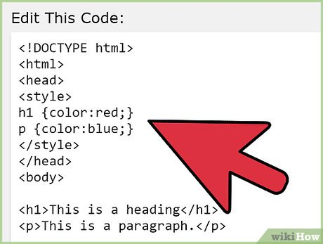

INTERNAL CSS
About on Css: Internal Css
INTERNAL CSS WE CAN USE INSIDE HEAD TAG CREATE SELECT TAG WE DIRECTLTY WRITE IN SIDE SELECT
INTERNAL CSS WE CAN USE INSIDE HEAD TAG CREATE SELECT TAG WE DIRECTLTY WRITE IN SIDE SELECT TAG
INTERNAL CSS WE CAN USE INSIDE HEAD TAG CREATE SELECT TAG WE DIRECTLTY WRITE IN SIDE SELECT TAG
INTERNAL CSS WE CAN USE INSIDE HEAD TAG CREATE SELECT TAG WE DIRECTLTY WRITE IN SIDE SELECT TAG
👇SEE BELOW THE EXAMPLE:: ↓ 👇
